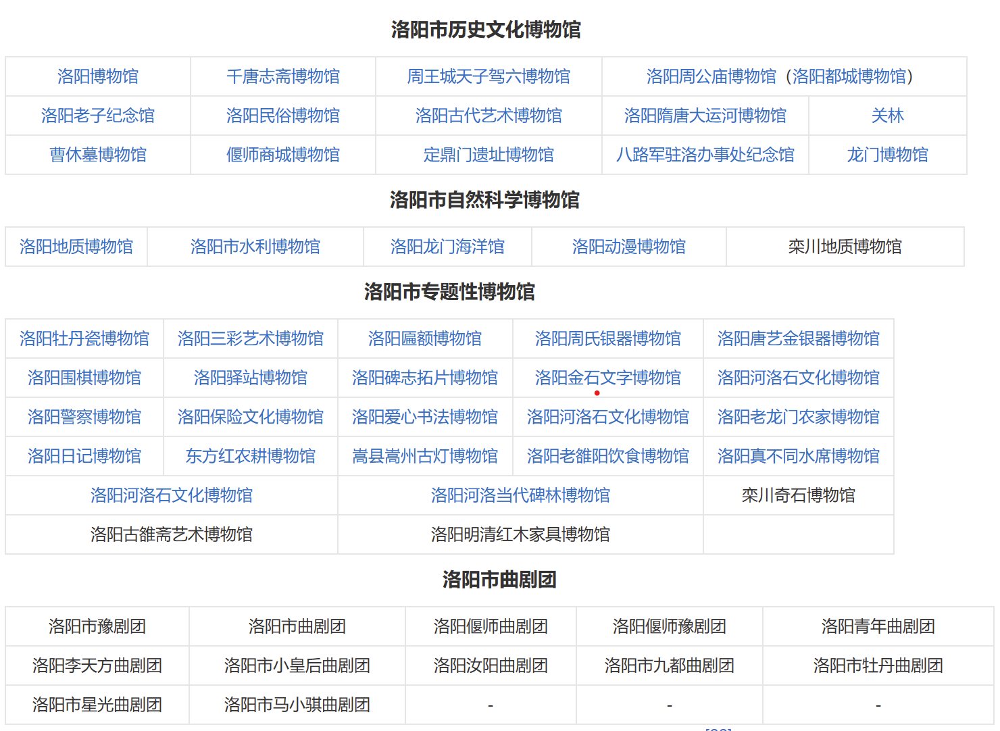

社会事业（高度枯燥警告😒）
科学技术
据洛阳市发改部门统计，2019年末洛阳市共有省级以上企业技术中心104个，其中国家级14个；省级以上工程实验室（工程研究中心）95个，其中国家级9个。据科技部门统计，年末共有省级以上工程技术研究中心202个，其中国家级2个；省级重点实验室20个。据知识产权部门统计，全年共申请专利13624件，授权专利8760件。有效发明专利7322件，比上年增长5.95%。全年签订技术合同1629份，技术合同成交额48.3亿元
教育事业
据洛阳市教育部门统计，2019年洛阳市全市共有普通高校7所，招生4.39万人，在校生13.73万人，毕业生3.46万人。普通高中81所，招生4.90万人，在校生14.34万人，毕业生4.68万人。普通初中322所，招生9.72万人，在校生28.36万人，毕业生9.17万人。小学843所，招生10.77万人，在校生61.06万人。幼儿园在园儿童26.47万人。普通中等专业学校招生3.74万人，在校生9.60万人。特殊教育学校招生482人，在校生1855人。
截至2020年末，洛阳市全市全市共有普通高校7所，招生4.37万人，在校生13.98万人，毕业生3.66万人。普通高中81所，招生5.08万人，在校生14.93万人，毕业生4.60万人。普通初中323所，招生9.34万人，在校生28.42万人，毕业生9.09万人。小学764所，招生10.46万人，在校生61.89万人。幼儿园在园儿童27.25万人。普通中等专业学校36所，招生3.59万人，在校生9.78万人。特殊教育学校招生225人，在校生1954人。
截至2020年末，洛阳市全市共有省级以上企业技术中心120个，其中国家级16个；省级以上工程实验室（工程研究中心）118个，其中国家级9个；省级以上工程技术研究中心283个，其中国家级2个；省级重点实验室23个。全年共申请专利15825件，授权专利11161件。截至年底，有效发明专利8073件，比上年增长10.3%。全年签订技术合同1059份，技术合同成交额53.8亿元。
文化事业
据洛阳市文化、广电部门统计，2019年末洛阳市共有艺术表演团体135个，文化馆17个，公共图书馆17个，博物馆77个。全国重点文物保护单位51处，省文物保护单位115处。全市共入选国家非物质文化遗产名录8个。年末中、短波广播发射台和转播台12台，一千瓦以上电视发射台和转播台12台。全市广播人口覆盖率98.42%，电视人口覆盖率99.06%。市级电视台周播出时间504小时，市级广播电台日播出时间62小时 。 截至2020年末，洛阳市全市共有公有制艺术表演团体15个，文化馆16个，公共图书馆17个，博物馆102个。全国重点文物保护单位51处，省级文物保护单位115处。全市共入选国家非物质文化遗产名录8个。年末中、短波广播发射台和转播台12台，一千瓦以上电视发射台和转播台12台。全市广播人口覆盖率97.95%，电视人口覆盖率98.65%。市级电视台周播出时间394.44小时，市级广播电台日播出时间60.83小时.
医疗卫生
据洛阳市卫生部门统计，2019年末洛阳市共有卫生机构4570个，床位52979张；其中医院、卫生院311个，床位49741张。卫生防疫机构16个，妇幼卫生机构16个。卫生技术人员53589人，其中执业医师、助理执业医师20866人，注册护士24087人。卫生防疫机构人员998人，妇幼卫生机构人员2709人。农村乡（镇）共有卫生院153个，床位9680张，卫生技术人员5880人。 截至2020年末，洛阳市全市共有卫生机构4788个，床位55250张；其中医院、卫生院320个，床位51949张。卫生防疫机构16个，妇幼卫生机构16个。年末共有卫生技术人员58795人，其中执业医师、助理执业医师23034人，注册护士26447人。卫生防疫机构人员1153人，妇幼卫生机构人员3143人。农村乡（镇）共有卫生院153个，床位10046张，卫生技术人员6571人。
环境保护
据洛阳市环保部门统计，2019年洛阳市全年万元规模以上工业增加值能耗下降18.98%，降幅大于全省水平4.85个百分点。据环保部门统计，年末全市环保系统人数1685人，环境监测人员450人，各级环境监测站10个；烟尘控制区16个，面积13878.7平方千米；环境噪声达标区11个，面积216平方千米。全年市区空气质量优良天数达到177天。年末共有自然保护区4个，其中国家级自然保护区2个。森林公园16个，其中国家级森林公园9个。森林覆盖率45.3%。 截至2020年末，洛阳市全市万元规模以上工业增加值能耗下降6.29%，降幅大于全省水平6.76个百分点。 截至2020年末，洛阳市全市环保系统人数1175人，环境监测人员452人，各级环境监测站10个；烟尘控制区16个，面积13878.7平方公里；环境噪声达标区11个，面积216平方公里。全年市区空气质量优良天数达到244天。 截至2020年末，洛阳市共有自然保护区4个，其中国家级自然保护区2个。森林公园14个，其中国家级森林公园6个。森林覆盖率45.5%。